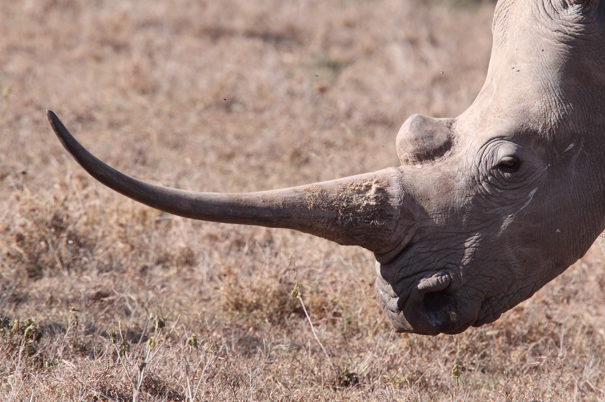

Our solution is to make a synthetic material to mimic the rhino horns. In the long term, it would make people lose trust in the market because it could be synthetic, or the synthetic could be cheaper than the real one. This could reduce the amount of demand in the rhino trade because people wouldn't know if they could trust the suppliers, or it could make it so people buy the synthetic stuff because it is almost the same, and they would sleep easier knowing it is gotten ethically. The material used is keratin, and it is extracted from hair, nails, feathers, horns, hooves and beaks. We could collect dead skin cells to help with the collection from dead rhinos, calcium from science shops and melanin from seeds and cuttlefish ink. When we combine these materials together, we could make a synthetic material very similar to rhino horns themselves.
